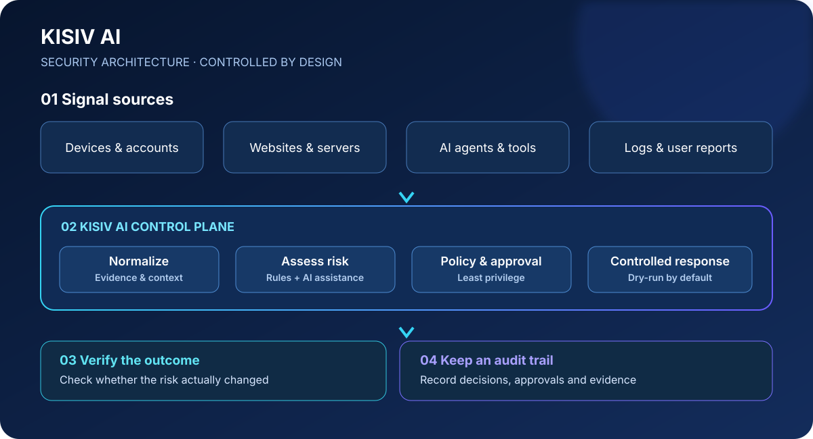

◈
风险研判
将安全事件整理成结构化上下文，辅助理解风险等级、判断依据与不确定性。
为个人用户、AI Agent、网站与服务器探索更可控的安全防御方式。连接安全信号、风险研判、授权响应与审计验证，让自动化始终处于清晰的边界之内。

目标架构示意 · 不代表所有模块已实现
安全不只是发现异常。还需要解释风险、约束操作、验证结果，并留下可供复盘的证据。
将安全事件整理成结构化上下文，辅助理解风险等级、判断依据与不确定性。
强调最小权限与明确授权，避免把模型输出直接当成可信系统命令。
区分建议、批准、执行与验证状态，避免把动作完成误认为风险已消除。
这些原则应贯穿架构、实现、测试和产品体验。
KISIV AI 当前处于早期 MVP / 持续开发阶段。项目已包含基础 FastAPI + SQLite 应用、安全事件录入与查询、初步规则研判、默认 dry-run 模拟响应、审计记录与基础测试。